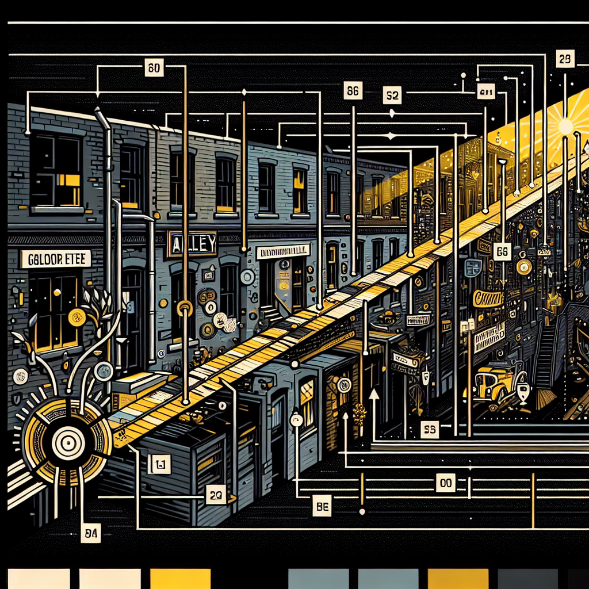

The Digital Rat: Is Technology Enhancing or Hindering Our Lives?
With Ratopolis embracing advanced technology like smart burrows and digital cheese delivery services, questions arise about how these innovations are impacting traditional rat values and mental health.


Hidden Gems: The Art Collectives of Ratterville Alley
Ratterville Alley, once an overlooked and forgotten corridor, has undergone a magical transformation, becoming a bustling haven for local artists. This vibrant enclave now dazzles with murals, sculptures, and installations that breathe new life into the streets of Ratopolis. But what’s behind this creative renaissance, and how is it enriching our beloved city?